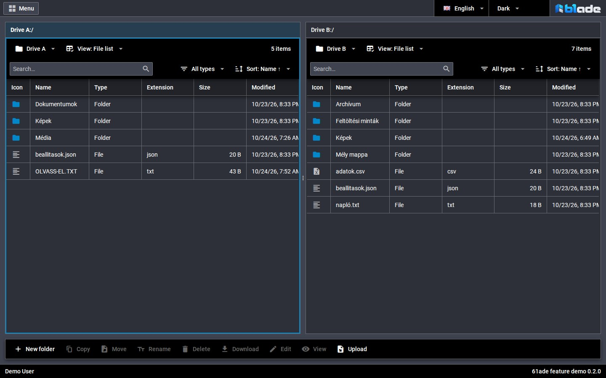
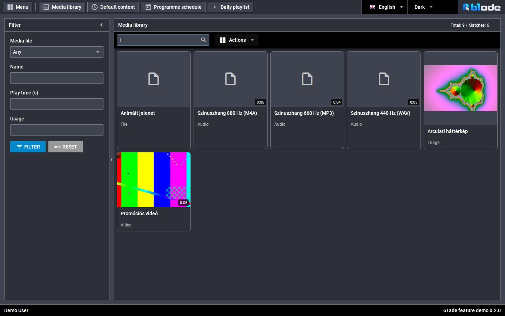
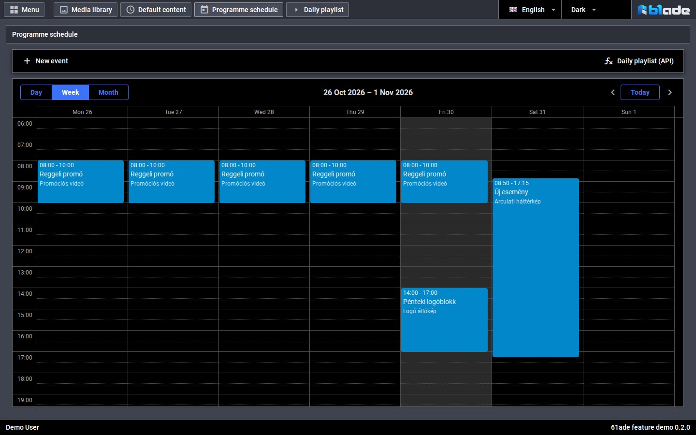
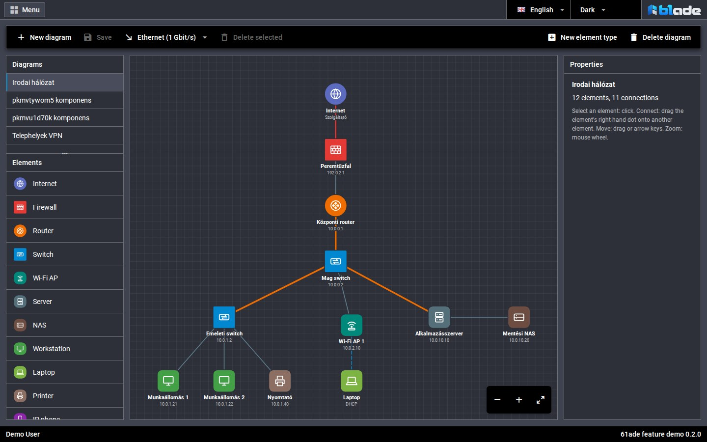

Declare the everyday.
Describe resources, fields, views and actions in PHP or modular JSON. The toolkit turns those definitions into a working admin interface.
A foundation for the application you have in mind
Your domain.
Your rules.
A shared foundation.
61ade brings the everyday parts of an admin application together. Start with a PHP backend, a DHTMLX interface and a shared toolkit. Put your time into what makes your project yours.
PHP 8.4+ · TypeScript · DHTMLX · Modular JSON
01 / THE IDEA
Sign-in, permissions, forms and lists come up in almost every project. 61ade gives them a common foundation, so they can work together instead of being rebuilt one screen at a time.
Describe resources, fields, views and actions in PHP or modular JSON. The toolkit turns those definitions into a working admin interface.
Use your own PHP handlers and TypeScript modules for your application’s behavior. The public toolkit provides components, services and extension points.
Your business logic, data and integrations belong to your project. 61ade supplies the shared admin infrastructure underneath.
02 / CAPABILITIES
Browse the real interface, then open the demo and try it. Every image here comes from the running 61ade demo, using synthetic data.
A two-panel file manager, resumable uploads, media tiles and image, audio and video previews. File access runs through the same permission and action system as the rest of the application.
Read the documentation

Day, week and month views, recurring events and exceptions. The demo puts the calendar to work as a digital signage schedule.

Read the documentationA visual diagram editor with a palette, connections and editable properties. The network topology demo is one example of a project built on it.

Read the documentationSelect a screenshot to see the full interface.
Password sign-in, optional e-mail verification, remembered sessions and user administration. An optional AuthHandler integration provides external sign-in; provider setup is required.
Read the documentationRoles, object and field permissions, and scoped API keys. Access is checked on the server, through the same action executor used by the interface.
Read the documentationFiltering, sorting, inline editing, validation, record details and related views. Lists adapt to cards on smaller screens; the desktop file manager and diagram editor have their own size requirements.
Read the documentationRegistered actions can be exposed through scoped API keys. An audit journal records supported operations. Lists support polling or a configured WebSocket service; a searchable log administration screen is still planned.
Read the documentationBuild your own views, field types and commands with the public TypeScript toolkit. Reuse list, form, file, calendar, diagram and media components; run untrusted project content in the sandbox component.
Read the documentationBuilt-in localization, light and dark themes, application skins and optional multi-tenancy for SQL resources. Tenant-scoped file storage is not yet implemented.
Read the documentationActively evolving. PHP is the current backend; SQLite powers the demo. A language-independent backend contract, PostgreSQL and JSON-file storage remain future work.
03 / THE STORY
61ade is a new toolkit with a much longer story behind it.
Before ADE, there was DDE: an HTML4-based framework that proved useful at around twenty customers.
ADE was already the third framework I had built in my life. I made it entirely on my own, starting when AJAX was still a fashionable new term. Its AJAX-based, HTML5-ish hybrid interface served many projects for banks, telecom companies and systems integrators.
I know from hands-on work what makes a useful HTML5 admin interface with a PHP backend. This time, the toolkit was built with AI, under my active direction and grounded in the experience and lessons of those earlier systems.
sanch · Creator of 61ade
04 / MAKE SOMETHING
For free projects, the intention is simple: use 61ade for free. If you plan to make money with it, get in touch first and tell me what you have in mind.
If it helps you, a GitHub star or a few words about what you built would make my day. A thank-you is welcome.
The public demo uses made-up accounts and data. Sign in with this shared account to explore the working interface.
demo@example.test61ade-demo05 / SAY HELLO
A question, a commercial project, or just a note to say it helped. I’d like to hear from you.
sanch@61ade.com